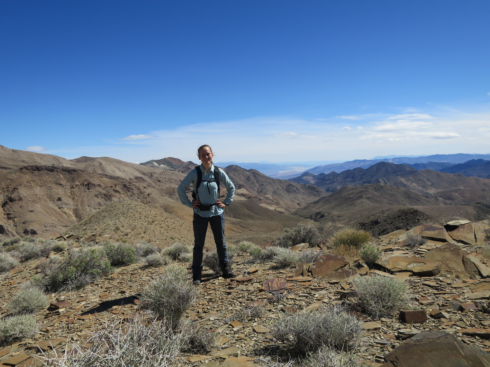
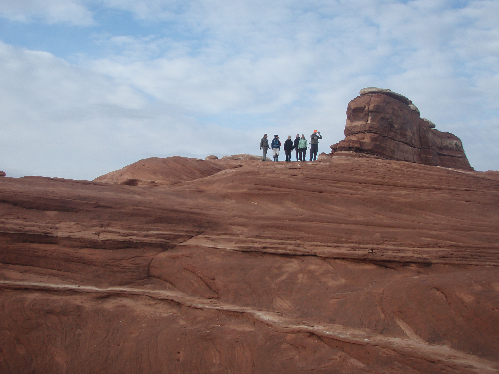

Anne-Sofie Ahm is an Adjunct and incoming Assistant Professor in the School of Earth and
Ocean Sciences (SEOS)
at the University of Victoria (officially starting in April, 2022). Dr. Ahm
aims to build an interdisciplinary research group that combines geochemistry,
geobiology, field geology, and numerical modeling. Research questions will
focus on understanding and improving the record of seawater chemistry and
carbon cycling throughout Earth history, from 3 billion years ago until today
(Read more about ongoing research projects...).
The research group will be part of a vibrant Earth history node at SEOS,
which also includes students and postdocs that work with
Jon Husson and
Blake Dyer.
Currently, we are looking for motivated students to join the Earth history team!
Please reach out to Dr. Ahm to discuss opportunities for Undergraduate,
Masters, and PhD projects at UVic (read more here).